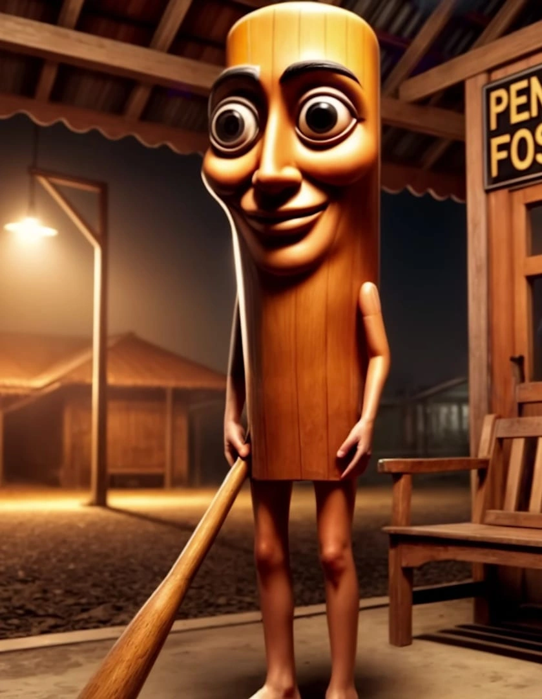

🎶 Tralalero Tralala
A cantoria folclórica que tomou conta das redes. Um tralala e pronto: vício instalado.
🪘 Tung Tung Tung Sahur
Uma batida ancestral que acorda até quem não quer ser acordado.

🩰 Ballerina Cappucina
Ela gira sem parar, como os pensamentos de quem tomou muito café.
🐄 La Vaca Saturno Saturnita
Diretamente de Saturno, a vaca cósmica que traz o brainrot galáctico.
🐊💣 Bombardiro Crocodilo
Um crocodilo explosivo que invade a mente com passos caóticos e gritos de guerra. Ninguém está seguro.